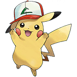

<mat-sidenav-container class="sidenav-container">
	<mat-sidenav
		#drawer
		class="sidenav"
		fixedInViewport
		role="navigation"
		mode="side"
		opened="false"
	>
		<mat-toolbar>Menu</mat-toolbar>
		<mat-nav-list>
			<a mat-list-item href="#">Link 1</a>
			<a mat-list-item href="#">Link 2</a>
			<a mat-list-item href="#">Link 3</a>
		</mat-nav-list>
	</mat-sidenav>
	<mat-sidenav-content>
		<mat-toolbar color="primary">
			<button
				type="button"
				aria-label="Toggle sidenav"
				mat-icon-button
				(click)="drawer.toggle()"
			>
				<mat-icon aria-label="Side nav toggle icon">menu</mat-icon>
			</button>
			
			<span>DBC's Pokedex App</span>
		</mat-toolbar>
		<!-- Add Content Here -->
		<div class="container-fluid m-4">
			<app-search-pokemon></app-search-pokemon>
			<app-pokemon-list-manager></app-pokemon-list-manager>
		</div>
	</mat-sidenav-content>
</mat-sidenav-container>
